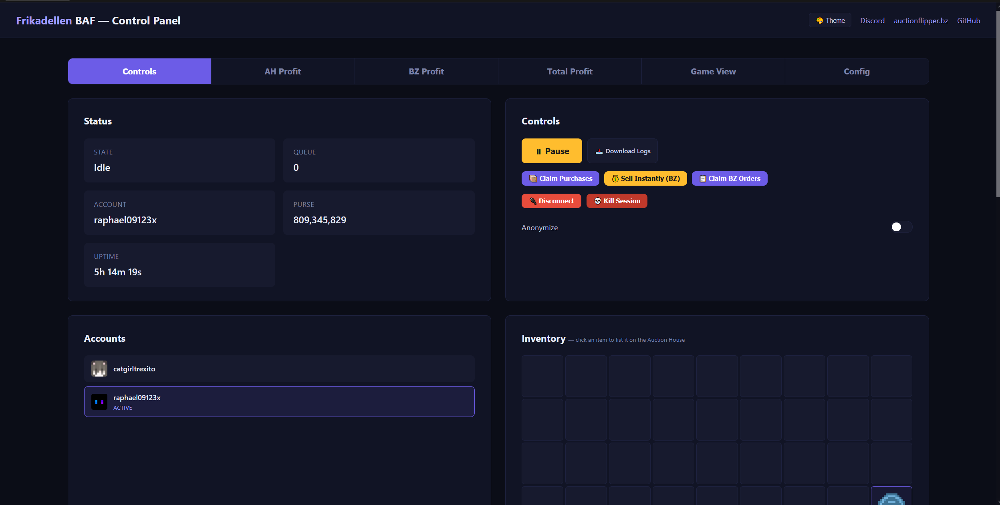
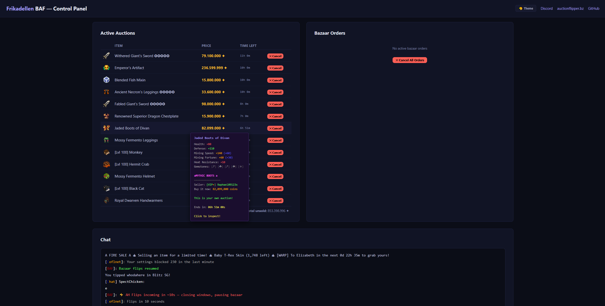
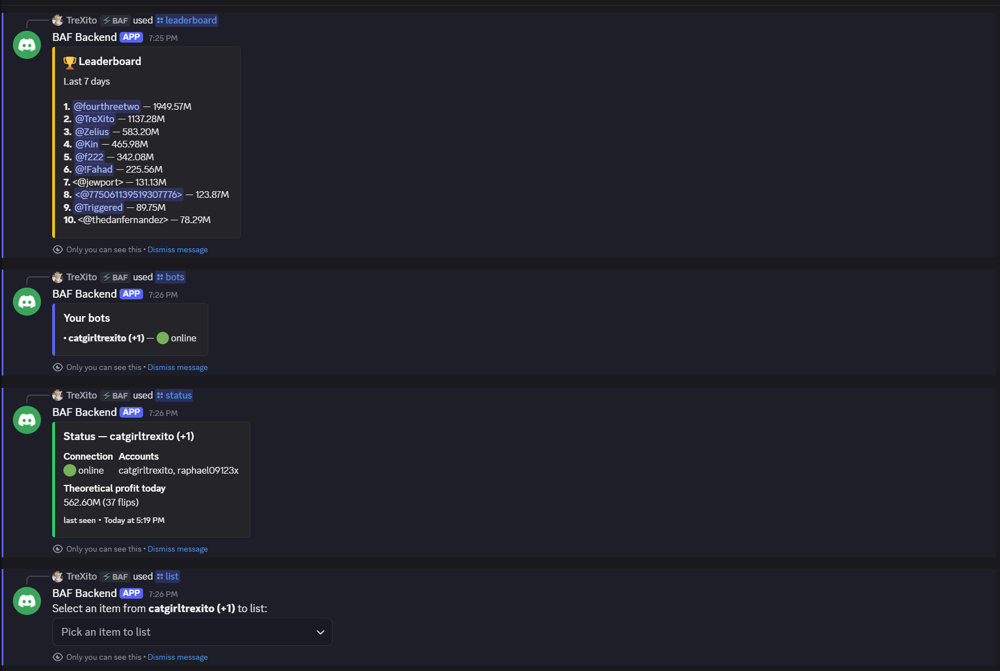

Find & act
Coflnet opportunities feed the Auction House workflow. The client buys underpriced BINs and can relist acquired items.
A PROJECT BY PHILIPP PODOBRI / TREXITO
Frikadellen BAF is a headless Rust client for Hypixel SkyBlock. It acts on Coflnet flip data, handles Auction House listings and Bazaar orders, and makes the state of a running bot visible through a web panel and Discord.
01 / THE SYSTEM
The interesting part of automation is what keeps it useful when a session lasts longer than a demo. These are the main pieces described in the public project documentation.
Coflnet opportunities feed the Auction House workflow. The client buys underpriced BINs and can relist acquired items.
The Bazaar side places buy and sell orders, checks fills, collects items and manages stale orders.
A browser panel shows bot state and controls. Discord integration gives linked users remote commands and notifications.
Prebuilt releases cover Linux, macOS and Windows. A loader checks for an updated build when it starts.
“A flip takes a moment.
The system around it has to keep making sense.”
02 / IN THE OPEN
These are screenshots of the project interface, not a simulated profit feed. They show the parts that help you understand and control a session.



For the current list of supported features, read the repository README ↗.
03 / GET THE PROJECT
The source and current platform builds live on GitHub. You need Minecraft Java Edition and a Coflnet account for flip data. The full setup guide covers authentication, configuration and keeping a session running.
wget https://github.com/TreXito/frikadellen-baf-121/releases/latest/download/FrikadellenBAF-loader-linux-x86_64
chmod +x FrikadellenBAF-loader-linux-x86_64
./FrikadellenBAF-loader-linux-x86_64The loader checks for a newer build each time it starts. Use the releases page for Windows and macOS builds.
04 / NOTES & LIMITS
Automation can violate Hypixel’s rules and can lead to account penalties. Market conditions, latency and configuration affect results. Figures shown by a bot may be theoretical until items actually sell.
Frikadellen BAF is open source under AGPLv3 and is not affiliated with Hypixel, Mojang or Coflnet. The source and documentation are the best place to check what it currently does.